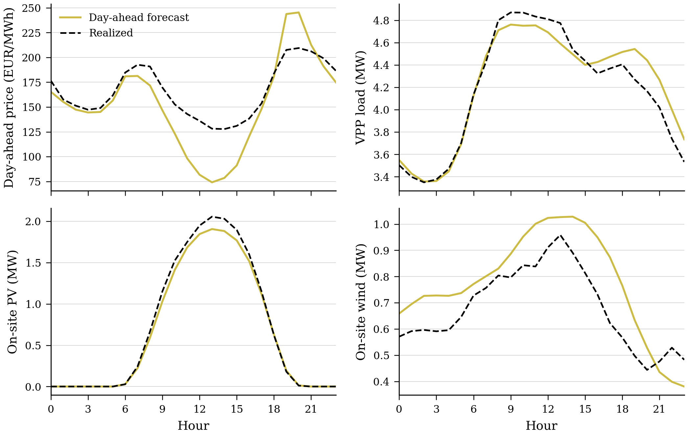
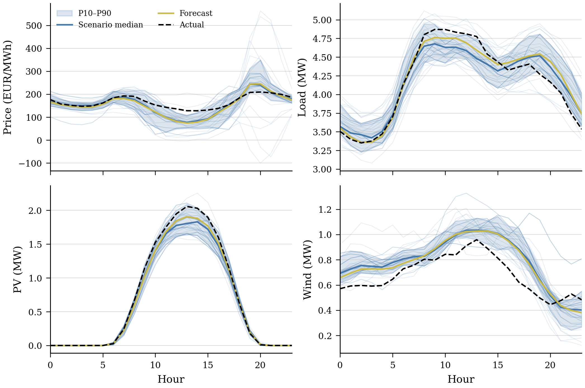
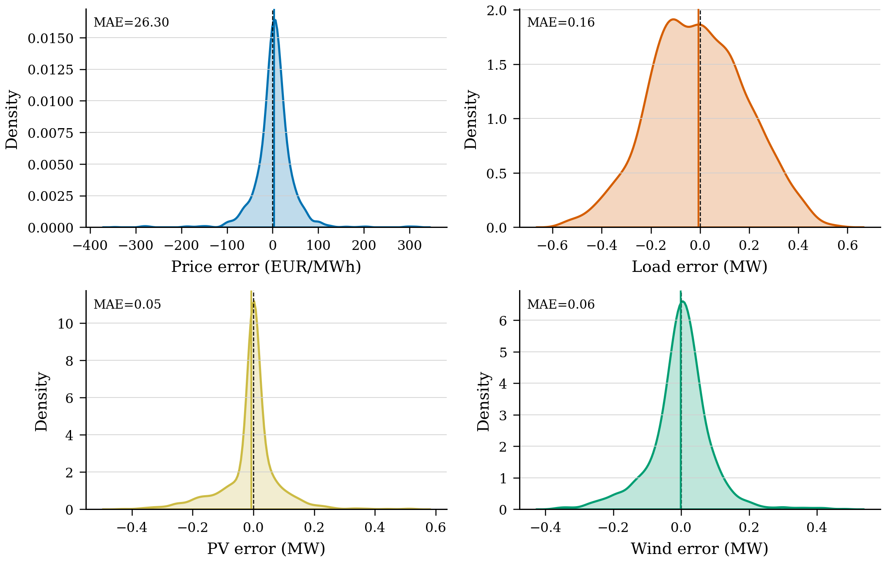
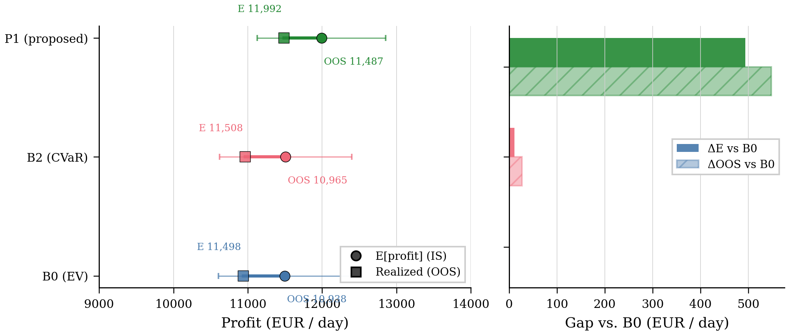
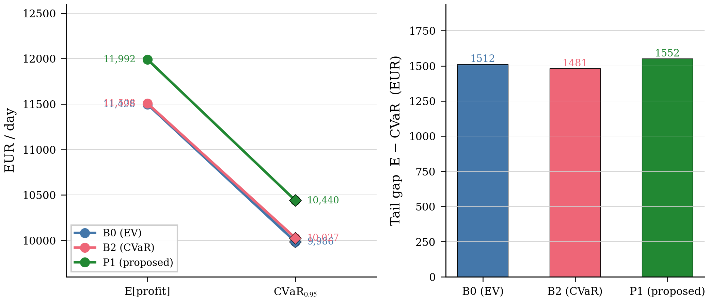
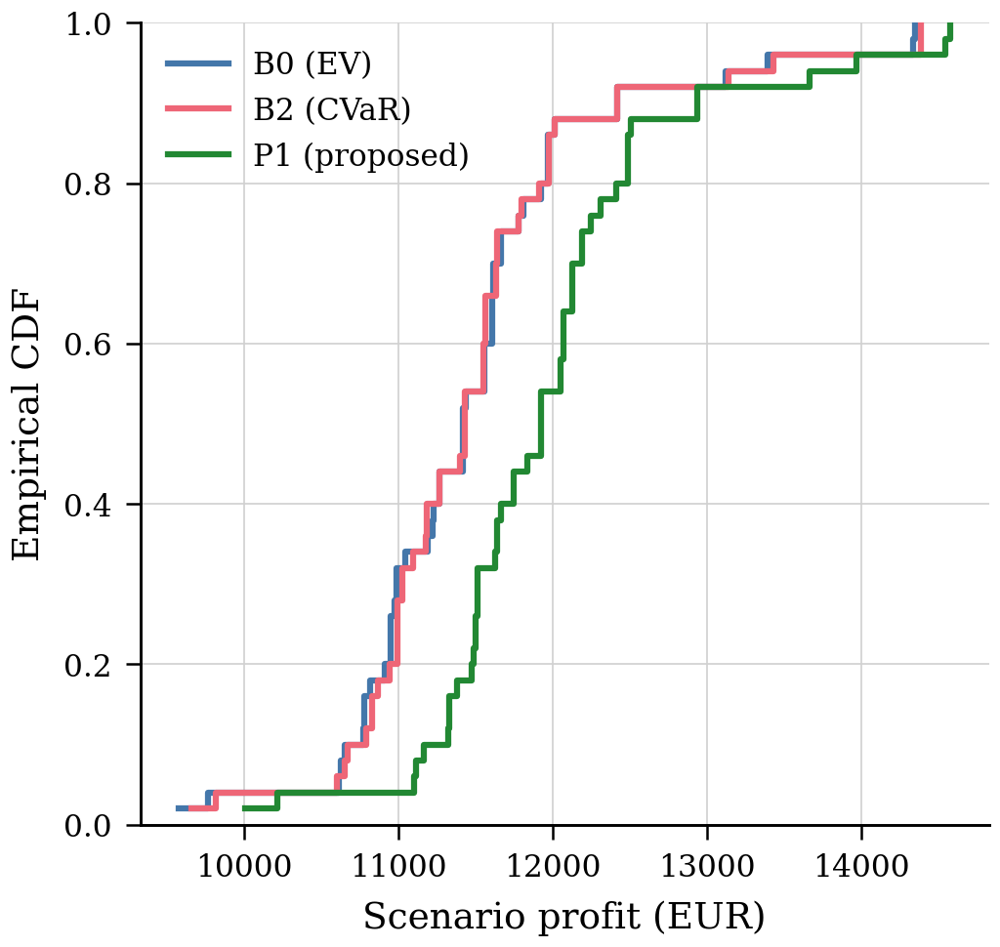
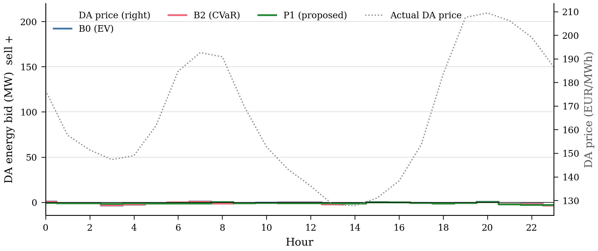
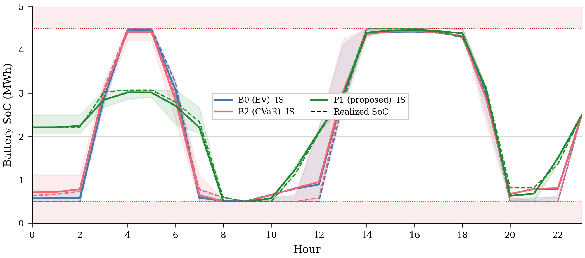
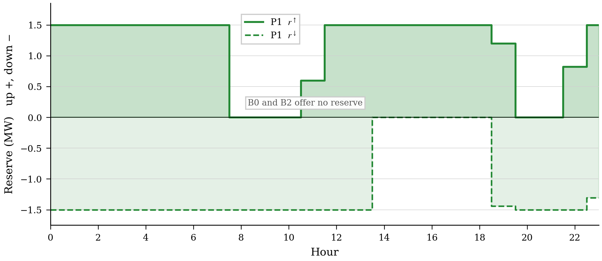
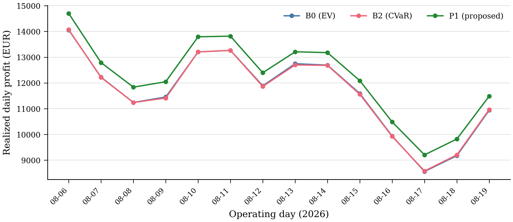

IEEE Transactions style. Operating day 19 August 2026, bidding zone DE-LU. An industrial energy contract of 180 EUR/MWh is used only when reporting profit; it is exogenous and does not change the ranking of the bids.
Abstract— A virtual power plant (VPP) that sells day-ahead energy and reserve from PV, wind, a battery, and a small gas unit is exposed to joint forecast errors in price, load, and renewable output. We formulate a mean–CVaR linear program on a 24-hour horizon and settle frozen first-stage bids on German SMARD DE-LU data. Four bidding architectures are compared on the same physical plant: a deterministic expected-value energy bid (B0), a CVaR energy bid trained on independent error draws (B1), a CVaR energy bid trained on joint daily error blocks (B2), and a CVaR energy-plus-reserve bid that remains feasible for the battery state of charge in every retained scenario (P1). All four programs are linear and are solved to proven optimality by HiGHS. On 19 August 2026, P1 realises 11 487 EUR against 10 938 EUR for B0. The extra 549 EUR is, to within a few tens of euros, the 589 EUR of reserve capacity revenue. Breaking cross-variable dependence (B1 versus B2; P1 trained on independent errors versus P1) changes out-of-sample profit by less than 10 EUR/day. Energy-only CVaR does not beat B0 out of sample. A 14-day rolling test (6–19 August) reproduces the same ranking, with P1 ahead on every day. A myopic forecast-following heuristic realises 10 032 EUR; a perfect-foresight reserve bid realises 11 657 EUR, so P1 captures most of the hindsight reserve value. The Student-t copula fitted on the 2024–2025 design window has ν = 18.55 and is therefore close to Gaussian in the tail; that result, together with the B1/B2 comparison, is why we do not attribute the settlement gain to heavy joint tails. The seven-stage market chronology is written in the formulation; the SMARD experiment instantiates day-ahead (stage 1) and settlement (stages 6–7), because the public extract has no intraday order book.
Index Terms— Virtual power plant, CVaR, day-ahead bidding, energy storage, reserve deliverability, scenario generation, out-of-sample validation, SMARD.
Abbreviations
| Abbreviation | Description |
|---|---|
| CVaR | Conditional Value-at-Risk |
| DER | Distributed Energy Resource |
| DG | Distributed Generation |
| DR | Demand Response |
| DRP | Demand Response Provider |
| BESS | Battery Energy Storage System |
| DA | Day-Ahead |
| ID | Intraday |
| RM | Reserve Market |
| OOS | Out-of-Sample |
| MILP | Mixed-Integer Linear Programming |
| PV | Photovoltaic |
| VPP | Virtual Power Plant |
| WPP | Wind Power Plant |
| PIT | Probability Integral Transformation |
| ACF | Autocorrelation Function |
| AIC | Akaike Information Criterion |
| DRO | Distributionally Robust Optimization |
Sets and Indices
| Symbol | Description |
|---|---|
| ω ∈ Ω | Scenario index |
| t ∈ 𝒯 | Time index (hourly resolution) |
| s ∈ 𝒮 | Operational stage index, 𝒮 = {1, …, 7} |
| g ∈ 𝒢 | Distributed generation unit index |
| b ∈ ℬ | Battery energy storage system index |
| p ∈ 𝒫 | Photovoltaic unit index |
| w ∈ 𝒲 | Wind power plant index |
| d ∈ 𝒟 | Dispatch group index for surviving-reserve constraints |
| j ∈ 𝒥 | Demand response group index |
Parameters
| Symbol | Description |
|---|---|
| Pj,tDR | Power usage of the j-th flexible demand group at time t (MW) |
| ηbch, ηbdch | Charging and discharging efficiency of BESS b |
| λtDA | Day-ahead market price at time t (EUR/MWh) |
| λt,ωRT | Real-time market price in scenario ω at time t (EUR/MWh) |
| λj,ωDR | Price offered to demand-response group j in scenario ω (EUR/MWh) |
| λj,tDR | Time-varying DR price for group j at time t (EUR/MWh) |
| λb,tESS | Operational cost of BESS b at time t (EUR/MWh) |
| α | Confidence level for CVaR (e.g., 0.95) |
| λ, β | Risk-aversion coefficient (weight on CVaR in the objective) |
| πω | Probability of scenario ω |
| Cg,tDG | Marginal cost of DG unit g at time t (EUR/MWh) |
| Ebmin, Ebmax | Minimum and maximum state-of-charge of BESS b (MWh) |
| Pbch,max, Pbdch,max | Maximum charging and discharging power of BESS b (MW) |
| Pw,tW,avail | Available wind power from plant w at time t (MW) |
| Pp,tPV,avail | Available PV power from unit p at time t (MW) |
| DRjmax | Maximum demand-response capacity of group j (MW) |
| EDR,max | Maximum cumulative DR energy over the response window (MWh) |
| ctDR | Unit cost of demand-response activation at time t (EUR/MWh) |
| PtDA,comm | Day-ahead committed power (MW) |
| Favail | Total available flexibility capacity (MW) |
| Frcomm | Flexibility committed at stage r (MW) |
| Fd,t,ωsurv | Surviving flexible capacity in dispatch group d after loss of the largest resource in the group (SoC-feasible reserve) (MW) |
| Rd,tcomm | Reserve commitment of dispatch group d at time t (MW) |
| M | Big-M constant for logical constraints |
| R | Correlation / dependence matrix of the Student-t copula |
| ν | Degrees-of-freedom parameter of the Student-t copula |
Decision Variables
| Symbol | Description |
|---|---|
| xs | Decision vector at operational stage s |
| xs∗ | Optimal decision at stage s (held fixed in later stages) |
| Pt,ωPV | Dispatched PV power in scenario ω at time t (MW) |
| Pt,ωW | Dispatched wind power in scenario ω at time t (MW) |
| Pt,ωDG | Dispatched DG power in scenario ω at time t (MW) |
| Pt,ωch, Pt,ωdch | Charging and discharging power of the BESS in scenario ω at time t (MW) |
| Et,ω | State of charge of the BESS in scenario ω at time t (MWh) |
| Pt,ωgrid | Net grid exchange in scenario ω at time t (MW) |
| DRt,ω | Activated demand response in scenario ω at time t (MW) |
| Lt,ω | Load in scenario ω at time t (MW) |
| It,ω+, It,ω− | Positive and negative imbalance in scenario ω at time t (MW) |
| zt,ω | Binary variable that prevents simultaneous BESS charge and discharge |
| Πω | Operating profit in scenario ω (EUR) |
| Lω | Loss in scenario ω (EUR), the negative of profit |
| η | Auxiliary CVaR variable (VaR threshold) |
| ξω | Auxiliary CVaR excess-loss variable in scenario ω (EUR) |
| RωDA | Day-ahead market revenue in scenario ω (EUR) |
| RωID | Intraday market revenue in scenario ω (EUR) |
| RωRT | Real-time market revenue in scenario ω (EUR) |
| RωDR | Demand-response revenue in scenario ω (EUR) |
| RωRES | Reserve-market revenue in scenario ω (EUR) |
| CωDG | Distributed-generation cost in scenario ω (EUR) |
| CωBESS | Battery operating cost in scenario ω (EUR) |
| CωDR | Demand-response activation cost in scenario ω (EUR) |
| Cωimb | Imbalance settlement cost in scenario ω (EUR) |
| Fsrem | Remaining flexibility after stage s (MW) |
| etx | Forecast error for variable x at time t |
| ẽtx | Calibrated forecast error for variable x at time t |
| utx | Probability integral transform (PIT) of variable x at time t |
| zω,t | Latent vector from the Student-t copula in scenario ω at time t |
| eω,tx | Generated forecast-error scenario for variable x |
| xω,t | Generated physical scenario for variable x |
| ρx(ℓ) | Autocorrelation of error process x at lag ℓ |
Operational Stage Definitions
| Stage | Description |
|---|---|
| s = 1 | Day-ahead (DA) bid submission |
| s = 2 | Intraday (ID) adjustment 1 |
| s = 3 | Intraday (ID) adjustment 2 |
| s = 4 | Real-time (RT) pre-dispatch |
| s = 5 | Balancing-market activation |
| s = 6 | Final settlement |
| s = 7 | Post-event evaluation / OOS reconciliation |
A VPP can offer PV, wind, a battery, and a small dispatchable unit as one portfolio. The same aggregation piles forecast error, imbalance cost, and the risk that a reserved megawatt is not sitting in the battery when it is called. Stochastic programs, robust models, CVaR bids, and DRO have all been used for this setting [1]–[8].
Two modelling choices then get mixed up. One is how joint forecast errors are drawn. The other is which products the VPP is allowed to sell. A CVaR energy bid trained on a rich copula can still lose money if the only product is energy. A simple expected-value bid can look weak only because it was not allowed to sell reserve. We keep those two choices separate.
The programs compared below are linear. Binaries that forbid simultaneous charge and discharge appear in the algebra, (25)–(26), but they are redundant once efficiency is below one and throughput is penalised, so the numerical study is an LP, not a MILP. HiGHS returns status kOptimal in every case we report.
Contributions, stated as what was actually run:
1) A mean–CVaR LP for day-ahead energy, and a second LP that also sells SoC-feasible reserve.
2) An isolation test: joint daily error blocks versus independent draws of the same marginals (B1 versus B2; P1 versus P1 trained on independent errors).
3) Frozen-bid settlement on SMARD DE-LU, a 14-day rolling window, a forecast-following heuristic, and a perfect-foresight bound.
4) An open-source, auditable solve (HiGHS, CC BY 4.0 data).
Section II places the work. Section III describes the plant. Section IV is the uncertainty pipeline. Section V is the LP. Section VI is the experiment. Section VII reports numbers. Section VIII discusses what moved settlement. Section IX lists limits. Section X closes.
Day-ahead VPP bids are usually two-stage: a here-and-now DA position and a recourse that sees the whole scenario [3], [8]–[12]. CVaR is the usual tail measure because it linearises [6], [9], [14]. DRO hedges ambiguity in the distribution [13], [21]. Copula scenarios for wind errors exist but often default to Gaussian or independent draws [18]. Conformal price intervals have been tested as forecasts, not as VPP bids [19], [20]. Reserve is frequently sized from nameplate capacity rather than from energy that the battery still holds.
Table I is a four-column map. It does not claim that no paper has ever sold reserve. It claims that a CVaR energy–reserve LP, settled on SMARD with an independence ablation, is still worth reporting because that ablation is rarely shown.
| Study | Uncertainty | Risk | Reserve / data |
|---|---|---|---|
| Mujeeb et al. [8] | Two-stage SP, independent | CVaR | Energy+FRR / — |
| Fan and Liu [13] | Wasserstein DRO | Chance/DRO | — / — |
| Wang et al. [18] | Conditional GMM | Forecast | — / wind |
| O’Connor et al. [19] | Conformal intervals | Forecast | — / DA–BM prices |
| Nemati et al. [1] | Flexible robust | Robust | Seq. markets |
| Vahedipour-Dahraie [3] | Stochastic program | CVaR | Energy+reserve |
| This work | Joint blocks vs independent | Linear CVaR | SoC-feasible / SMARD OOS |
Table I is qualitative on purpose. Quantitative claims are reserved for Tables III–VI, which come from recorded solves.
The VPP is a price-taker: 5 MW-class industrial load, 4 MW PV, 2 MW wind, a 2.5 MW / 5 MWh battery (η = 0.95, SoC 10–90%, cyclic), and 1.8 MW of DG at 68 EUR/MWh. Degradation is 1.5 EUR/MWh of throughput. Default risk weights are λ = 0.05 and α = 0.95, with K = 50 equiprobable scenarios. Imbalance is a two-price proxy (short at a premium to DA, long at a discount), not the German reBAP series. Reserve capacity prices are shaped from the DA forecast (base 9.0 / 6.5 EUR/MW/h); they are not cleared FCR or aFRR auctions. Demand response appears in the algebra and in the nomenclature; it is not an observed SMARD activation series and is not used in the numerical study.
| Parameter | Value |
|---|---|
| BESS power / energy | 2.50 MW / 5.00 MWh |
| PV / wind | 4.00 / 2.00 MW |
| DG rating / cost | 1.80 MW / 68 EUR/MWh |
| λ / α / K | 0.05 / 0.95 / 50 |
| Solver | HiGHS LP (SciPy linprog) |
Table II is held fixed except in the λ, α, and K grids of Section VII. Changing a row would change every later table.
SMARD DE-LU series (Bundesnetzagentur, CC BY 4.0, via Energy-Charts) supply 15-min prices, load, solar, wind, and day-ahead forecasts, resampled to hourly means. Two windows must not be confused. The copula and ACF diagnostics were fitted on a 1 January 2024 – 30 September 2025 design window. The settlement study uses the extract that was live at runtime: 1 June – 21 August 2026, operating day 19 August 2026, rolling test 6–19 August. National MW are scaled to the ratings in Table II.
Forecast errors are etx = xtact − xtfc for x ∈ {price, load, PV, wind}. Load is bias-corrected before scenarios are drawn. Joint scenarios are daily block bootstrap: a whole historical error day is added to the operating-day point forecast. Independent scenarios (B1, P1-ind) draw a different historical day for each of the four series, so marginals are kept and cross-variable dependence is destroyed.
A Student-t copula was fitted on the design window: ν = 18.5515, AIC −670.74 against −429.90 for Gaussian, OOS log-likelihood 12.99 against −30.71, pooled ACF MAE 0.00395. ν ≈ 18 is not a heavy-tailed copula. It is close to Gaussian in the joint tail. We therefore treat the copula as a calibration check, not as the reason P1 makes money. The numerical bids below use the block bootstrap, which keeps intra-day autocorrelation without claiming a copula sampling engine inside the solver loop.

Fig. 1 is the operating day. Price is a high weekday (about 130–210 EUR/MWh). PV is well forecast. Wind is the noisy series. These four panels are the information the bid may use (solid forecast) and the path settlement will use (dashed realized).

Fig. 2 is the joint object the LP hedges. Realized price, load, and PV stay inside the fan; wind undershoots the afternoon forecast.

Fig. 3 shows why a thin-tailed price model is unattractive even if the copula itself is not heavy: price-error kurtosis is 15.8. Load is almost symmetric. That is a statement about marginals, not about tail dependence.
First-stage decisions are the DA energy position ptDA and, in P1, upward and downward reserve. Recourse in scenario ω is charge, discharge, SoC, DG, and two-price imbalance. The objective is
max (1−λ) E[Πω] + λ CVaRα(Πω), (1)
with the Rockafellar–Uryasev linearisation [6], [14]. Power balance, cyclic SoC, and DG ramps are imposed in every scenario. P1 additionally requires that reserved power remain feasible for SoC and DG headroom in every ω,
pt,ωdis + pt,ωDG + rt↑ ≤ Pbatt + PDG, Et,ω − rt↑/ηdis ≥ Emin. (2)
We call (2) SoC-feasible reserve, not N−1 in the asset-outage sense. It is a robust energy check across scenarios, not a contingency list.
German markets open in sequence (DA, two ID auctions, continuous ID, RT, balancing, settlement). The algebra therefore has seven stages and a leftover-flexibility recursion so that the same megawatt is not sold twice. A textbook two-stage SP is the special case that merges stages 2–5. Public SMARD has no ID order book, so the experiment instantiates stage 1 (DA energy and, in P1, reserve) and stages 6–7 (frozen-bid settlement). Stages 2–5 are not filled with invented ID prices. The reported numbers are a DA-plus-settlement slice of a seven-stage layout, not a claim that we cleared a synthetic intraday market.
B0 is (1) with K = 1 (the mean scenario), λ = 0, and no reserve. B1 is (1) with independent error draws and no reserve. B2 is (1) with joint daily blocks and no reserve. P1 is (1)–(2) with joint blocks. P1-ind is (1)–(2) with independent draws. H0 sets pDA = PVfc + windfc − loadfc and then solves only recourse. Perfect foresight solves the same LPs on the realized path as if it had been known at gate closure.
Workflow: SMARD → hourly VPP panel → joint or independent error days → HiGHS LP → freeze first-stage → recourse on the joint scenario set (common measure) and on the realized day. Sensitivity: λ ∈ {0, 0.01, 0.02, 0.05, 0.1, 0.2}, α ∈ {0.90, 0.95, 0.99}, K ∈ {30, 50, 100} on P1, 54 solves, all kOptimal. Rolling OOS: 14 consecutive complete days ending 19 August 2026. Paired tests use daily OOS profits (n = 14) as the primitive that matters for a bid; in-sample scenario tests (n = 50) share one first-stage and are not independent draws, so we do not lean on their 10−40 p-values. Six paired comparisons are reported; we treat p < 0.01/6 as a rough Bonferroni check rather than a formal family-wise proof.
Table III is the isolation table. Every energy-only CVaR bid (B1, B2) lands within 35 EUR/day of B0 out of sample. Every reserve bid (P1, P1-ind) lands about 550 EUR/day above B0. Training P1 on independent errors instead of joint blocks changes OOS profit by +6 EUR. Training the energy CVaR on independent errors (B1) instead of joint blocks (B2) changes OOS profit by +7 EUR. Dependence, on this summer week, is not the lever. Reserve is.
| Model | Errors | Reserve | E[profit] | CVaR0.95 | Realized |
|---|---|---|---|---|---|
| H0 heuristic | point forecast | no | 10 677 | 9 010 | 10 032 |
| B0 EV | mean | no | 11 498 | 9 986 | 10 938 |
| B1 CVaR | independent | no | 11 505 | 10 014 | 10 971 |
| B2 CVaR | joint blocks | no | 11 508 | 10 027 | 10 965 |
| P1-ind CVaR | independent | yes | 11 986 | 10 407 | 11 493 |
| P1 CVaR | joint blocks | yes | 11 992 | 10 440 | 11 487 |
| PF energy | actuals | no | — | — | 11 055 |
| PF reserve | actuals | yes | — | — | 11 657 |
Table III also bounds ambition. The heuristic H0 is 906 EUR behind B0: even a mean-value LP is doing useful work relative to “bid the forecast.” Perfect-foresight energy is only 117 EUR above realized B0, so energy timing on this day is almost already captured. Perfect-foresight reserve is 11 657 EUR; P1 at 11 487 EUR takes most of that hindsight reserve value and leaves 170 EUR on the table.

Fig. 4 is a picture of the B0/B2/P1 rows of Table III. The dumbbell for P1 sits to the right; B2 covers B0. Numeric labels match the table, so the figure is not a second data set.

Fig. 5 is the tail companion. P1 starts higher and drops by about the same 1 550 EUR as B0, so the whole profit law has been shifted. B0 and B2 slopes coincide.

Fig. 6 is stochastic dominance on the training scenarios. P1 lies to the right of B0 and B2. B0 and B2 cross. That is why we do not advertise energy-only CVaR as a tail engine on this plant.

Fig. 7 shows all three plotted models as net buyers (−24 to −26 MWh). P1 is not winning an energy contest; it is leaving headroom for Fig. 9.

Fig. 8 is the physical signature of the reserve offer. B0 and B2 empty the stack to 10% overnight. P1 holds about 2.2 MWh, which is the energy needed to back upward reserve for an hour at the 1.5 MW cap after efficiency.

Fig. 9 is the product that Table IV attributes the money to: 26.6 MW·h up and 28.2 MW·h down, 589 EUR of capacity revenue. The empty 08–10 window is where the legend sits.
| Component | B0 | B2 | P1 |
|---|---|---|---|
| Load-service (exogenous) | 18 024 | 18 024 | 18 024 |
| DA energy | −3 895 | −4 255 | −4 343 |
| Reserve capacity | 0 | 0 | 589 |
| Imbalance | −223 | 163 | 175 |
| DG fuel | 2 938 | 2 938 | 2 938 |
| Battery degradation | 30 | 30 | 20 |
| Net | 10 938 | 10 965 | 11 487 |
Table IV splits the euro amount. Load-service is common. The P1–B0 gap is 589 EUR of reserve, a better imbalance account, and 10 EUR less cycling, minus a slightly more expensive DA energy position.
| Model | K | Vars / ineq. | Status | Time (s) |
|---|---|---|---|---|
| B0 | 1 | 216 / 46 | kOptimal | 0.011 |
| B2 | 50 | 7 323 / 2 350 | kOptimal | 0.173 |
| P1 | 50 | 7 323 / 7 150 | kOptimal | 0.303 |
Table V is the live solve. P1 adds reserve inequalities, not extra variables. MIP gap is zero because these are LPs. At K = 100, P1 still solves in 1.6 s.
| Model | Mean | Std | Min | Max |
|---|---|---|---|---|
| B0 | 11 639 | 1 589 | 8 557 | 14 056 |
| B2 | 11 633 | 1 582 | 8 576 | 14 070 |
| P1 | 12 203 | 1 570 | 9 204 | 14 701 |

Fig. 10 and Table VI are the decision-level test. Mean OOS profit is 11 639 (B0), 11 633 (B2), and 12 203 (P1). P1 is above the other two on every one of the 14 days. Paired P1−B0: mean +563 EUR, t = 35, Wilcoxon p = 1.2×10−4, d = 9.4, bootstrap 95% CI [533, 593]. B2−B0: −7 EUR, p = 0.33, CI includes zero. With six comparisons, the P1 results still clear a Bonferroni 0.01/6 line; B2 does not. In-sample scenario tests give the same ranking but share one first-stage, so we do not quote their 10−40 p-values as evidence of a new distribution.
On P1, raising λ from 0 to 0.20 lifts CVaR by about 113 EUR and cuts expected profit by 14 EUR. Realized profit on 19 August is highest near λ = 0.05. Realized profit moves by less than 9 EUR/day between K = 30 and K = 100. Those grids are omitted as extra figures; the CSVs sit with the code.
The isolation in Table III is the result. A deliverable reserve product, forced to respect SoC in every scenario, is worth about 550 EUR on this Wednesday and about 560 EUR/day over two weeks. A CVaR energy bid, whether the errors are joint or independent, is not worth a statistically detectable amount out of sample. A Student-t copula with ν = 18.55 was never likely to be the reason, and the B1/B2 pair confirms that.
That does not make joint errors irrelevant in winter, or in a week of negative prices, or for a VPP that cannot sell reserve. It does mean that, on this SMARD slice, selling a megawatt that the battery can actually hold beats refining the copula of the energy position.
Reserve prices here are shaped from DA, not taken from FCR/aFRR capacity auctions. If real capacity prices were near zero, P1’s advantage would shrink toward the 10 EUR cycling saving. If they were higher, the advantage would grow. The perfect-foresight reserve bound of 11 657 EUR is the ceiling under this price proxy, not under the German auction.
1) Fourteen summer days and one highlighted Wednesday. Winter and negative-price days are not in the rolling window.
2) National SMARD series are scaled to a fictional 5 MW plant. This is not a metered VPP.
3) Reserve prices and two-price imbalance are proxies, not reBAP or aFRR.
4) Stages 2–5 of the seven-stage layout have no ID data in this extract.
5) DR is in the algebra, not in the experiment.
6) SoC-feasible reserve is not an asset-outage N−1 study.
7) The copula ν = 18.55 is close to Gaussian; the settlement study uses block bootstrap, not a Student-t sampler inside the LP.
8) In-sample scenario tests are dependent. We rely on the 14 daily OOS pairs.
A mean–CVaR LP that sells day-ahead energy and SoC-feasible reserve, solved with HiGHS and settled on SMARD DE-LU, realises 11 487 EUR on 19 August 2026 against 10 938 EUR for a deterministic energy bid. Over 14 rolling days the mean gap is 563 EUR/day and does not change sign. Independent-error twins of the same LPs finish within 10 EUR/day of the joint-error versions. Energy-only CVaR does not beat expected value out of sample. The money is the reserve product, checked against battery energy in every scenario, not the copula. That is a narrower claim than the title of an earlier draft, and it is the claim the numbers support.
Prices and public-power series © Bundesnetzagentur | SMARD.de, via Energy-Charts, CC BY 4.0. Programs solved with HiGHS.
Checked against publisher records for this revision: [1], [3], [9], [10], [13], [18], [19], [21]. Preprint [17] is labelled as such. Unverifiable article numbers from earlier drafts were dropped.